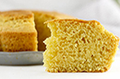

Otras recetas
Receta bizcochuelo de vainilla

Ingredientes
- 220 litros de leche
- 3 huevos
- Pre-mezcla Exquisita
Preparación
- Enmantecá y enhariná un molde de 24cm. de díametro y 8cm. de alto.
- Precalentá el horno a 180°C durante 15 minutos.
- Batí en un bowl los 3 huevos y los 220 litros de leche.
- Agregá la pre-mezcla y batí durante 3 minutos.
- Pasá la mezcla al molde y llevala al horno.
- Horneá a 160°C por 60 minutos o hasta que introduciendo un palillo en el centro salga seco.
- Dejar enfriar 15 minutos.
Video tutorial